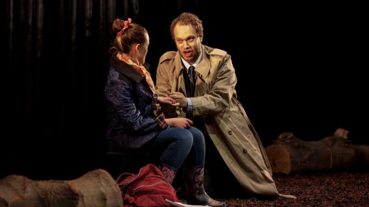

Deposuit potentes benefited from a wonderful bravura solo from the tenor… in the Tuba mirum the solo ensemble was launched very creditably with the tenor negotiating the tricky opening very neatly
‘Solos’ in Mozart Requiem and Bach Magnificat with Royal Hospital Choir, Nov 2014

The easily swayed and impulsive Gerent was heroically sung by Edward Hughes who evinced both a hopeless yet possessed passion with Iernin. He also mustered a defiance in the face of the Court after having been bullied into compliance by the dominant Noble Edyrn
‘Gerent’ in Iernin with Surrey Opera, Oct 2013
Edward Hughes is touching as the thoughtful Gio
‘Gio’ in The Blank Canvas with OperaUpClose, Aug 2014
Edward Hughes seems to have a feeling for the space he is performing in and made a likeable and believable leader
‘Riccardo’ in Ballo with OperaUpClose, May 2013
No wonder [Tosca] falls in love with Edward Hughes with his easy tenor voice
‘Cavaradossi’ in Tosca with OperaUpClose, October 2012
Edward Hughes…has a fine voice and great dramatic presence
‘Gerent’ in Iernin with Surrey Opera, Oct 2013
Matthias Nöther
Berliner Zeitung
Edward Hughes is a formidable young singer
Das Lied von der Erde at Berlin Philharmonie Kammermusiksaal with Ensemble MINI, May 2011
Hughes and (Catharine) Rogers, both with powerful vocals and moving acting, shine in their performances
‘Gerent’ in Iernin with Surrey Opera, Oct 2013
Edward Hughes is a muscular-sounding Cavaradossi, taking his high notes with impressive ease
‘Cavaradossi’ in Tosca with OperaUpClose, October 2012
Edward Hughes is of great hilarity like something out of American Slapstick
‘The Duke’ in Patience at Musee d'Orsay with RCMIOS, May 2011
And as for Edward Hughes, only sheer brilliance can make that Wallace and Gromit getup cool
Orpheus in the Underworld, December 2010
Hughes commanded the challenging score magnificently; sustaining repeated high B flats with impressive stamina and resonance
‘Riccardo’ in Ballo with OperaUpClose, May 2013

The singers take [the director's] demands in their stride, prioritizing word and action…Edward Hughes as Rodolfo and Rhona McKail as Mimi made a touching leading couple
‘Rodolfo’ in La Boheme with OperaUpClose, November 2012